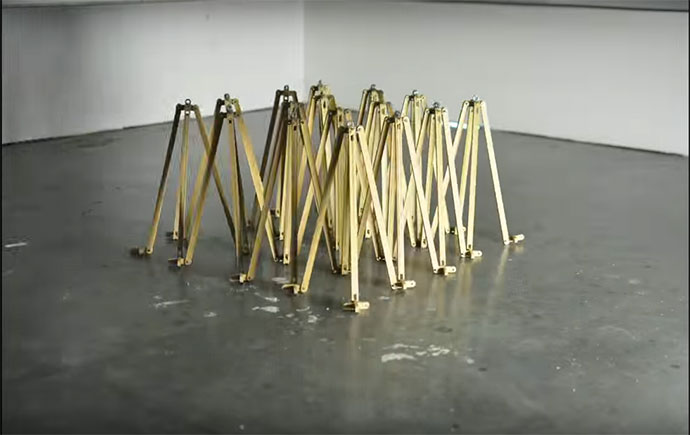
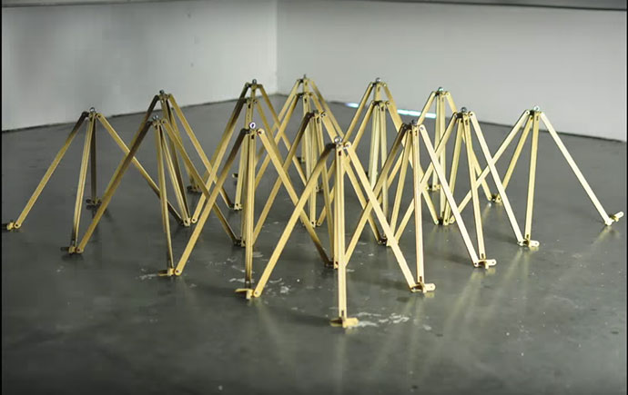

Umeå School of Architecture
4th semester/spring 2012
Deployable structures
DTS - Deployable
Tent Structure
In this workshop we were tasked with creating a demountable or deployable structure. My group made one that we called DTS-Deployable Tent Structure
which is a tent look-a-like structure that could be moved by a lorry.
Group members
Anna Carlsson, Andreas Häggblom, Johanna Lagersköld and Gustaf Ridderstöm
Movie: Gustaf Ridderstöm



